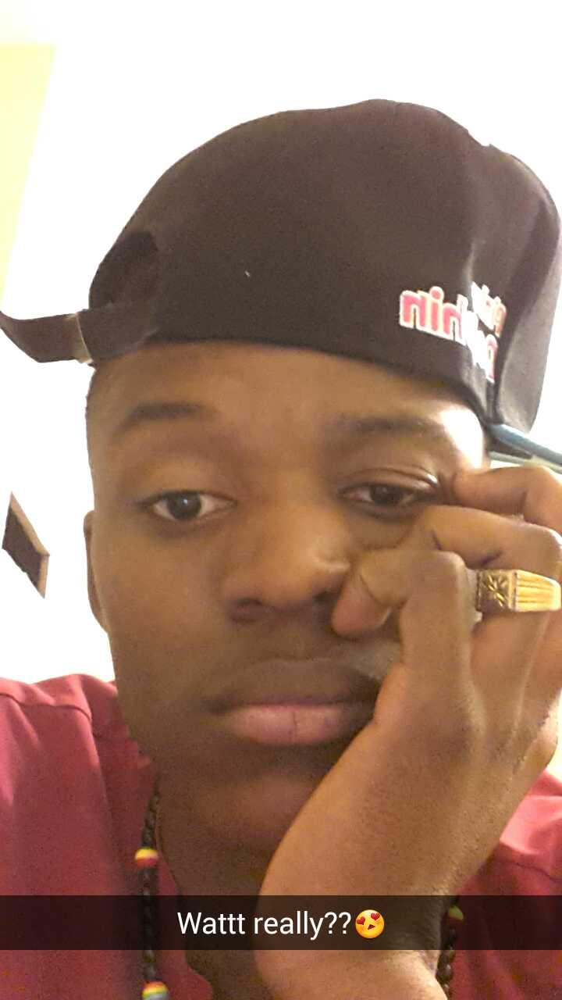

Vainqueur Mazambi

I am a designer turned web developer turned software engineer. I live in Canada, Ottawa, Ontario. The capital city of the best country in the world In my job now, I build software with Python and JS.
I get excited about buislding really fast systems that connect people. Also, I feel most inspired when I am thinking through difficult problems with people I admire. That is the best feeling in the world. I was always interested in computers, but had no idea you could have a job programming them. As a designer I taught myself HTML and CSS, but I really learned how to program at Hacker School in NYC. Hacker School changed my life - it was a risky decision to quit my job and leave Tennessee, but it paid off considerably. I think we should all take more risks like that!